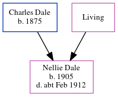

Nellie May Dale 1905 - c1912
[ Home ] | [ Calendar ] | [ Surnames Index ] | [ Census Index ] | [ Family History ]The child of Charles Dale (a general laborer) and Emily Horn (a domestic general servant), Nellie Dale, the second cousin twice-removed on the father's side of Nigel Horne, was born in Ramsgate, Kent, England in 19051 and baptized there at Christ Church on Jun 9, 1905. On Apr 2, 1911, she was living at 67 Addington Street in Ramsgate1.
She died c. Feb 1912 in Thanet, Kent, England2.
Parents
- Charles was born in 1875
- Emily
Citations
- 1911 Census for England & Wales - Findmypast (was age 6 and the daughter of the head of the household)
- England & Wales deaths 1837-2007 - Findmypast
Media
Kent Baptisms - GBPRS/CANT/B/96524441
England Births & Baptisms 1538-1975 - R_884613071
England & Wales deaths 1837-2007 - BMD/D/1912/1/AZ/000220/021
Family Tree
Generated by ged2site. Last updated on Jun 11, 2024